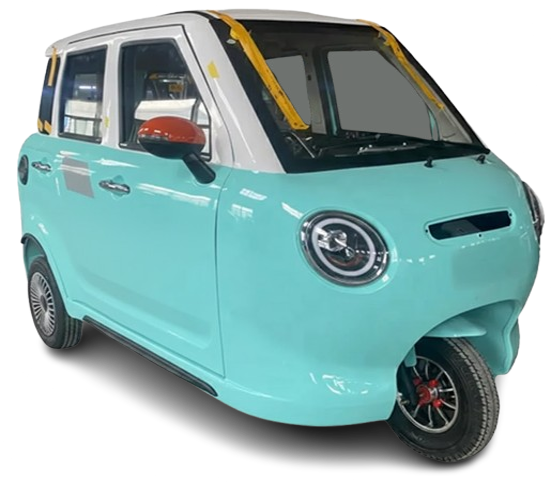
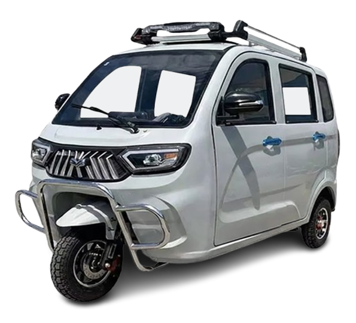

Modernization & Livelihood Empowerment

Empowering the poor while eliminating toxic emissions to mitigate Climate Change.
Ensuring financial returns through sustainable tie-ups with donors, funders, and investors.
Building real value through livelihood—modernizing a sector that has been historically ignored.
Tricycles are at the bottom of the economic "totem pole." With 1.5M registered units and nearly 2M total including "colorums," drivers earn as little as P350/day after paying boundary fees.
There is currently no official national policy on tricycle modernization. While 2-stroke units have shifted to 4-stroke, they remain the most pollutive vehicles in terms of density and toxic intensity.
Miriam-Environmental studies show heavy particulate matter (PM) at terminals. Even invisible emissions from 4-stroke engines are more toxic than diesel counterparts due to fuel-oil mixtures.
Coined by Leahcim Nanula, this principle suggests that loosening the "social soil" through multiple plowings (reinvestments) leads to a bigger harvest:
"The Poor must learn philanthropy too; helping others is the hallmark of humanity."
Annual Particulate Matter removed. This would fill 476 containers (20-footers), stretching 2.89 kilometers if lined up.
Engine oil eliminated. Prevents 270kg of metal shavings and 120,000 oil filters from entering water systems annually.
Total annual reduction in greenhouse gases by eliminating 12 million liters of gasoline consumption.
Annual service value based on 10,000 drivers earning P700/day. Includes a P1B resale market for replaced units.
Reduction in national fuel import costs by saving 12 million liters of gasoline (P1.02B value).
10,000 units generate P102M in VAT and P120M in Excise Taxes annually for the government.
Earnings are reinvested into ventures where E-trike drivers benefit sustainably:
Secondary income through food carts and mobile "Lechon Manok" units using hygienic rotating stainless steel ovens.
Poultry farming to supply the food ventures, creating a closed-loop economy for the driver community.
Drivers benefit only if they PAY FORWARD to help others join the program. Failure to pay forward results in the loss of all benefits.
Over 23 years, 10,000 units paid P69 Million in road user taxes. Yet, 80% was spent on National Roads where tricycles are strictly BANNED.